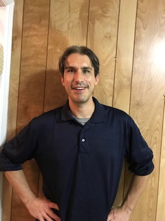

About Me

I am Sean Cumming, and I am interested in becoming a full-stack developer because I want to help people create new innovations with technology, and I want to help people who have health issues through medical technology.
I am extremely interested in utilizing "Machine-Learning" and Data Science to create new Applications, Technology, and Robots/AI, and, on the side, I want to help people create websites as they are envisioned and help companies move Data in the most efficient way.
My primary purpose for becoming a Data Scientist/Developer was initially to work on space technology, and that still is the primary purpose I have for learning to program/code. I would eventually like to create satelites/spaceships/robots that can investigate the Solar System, but, until I reach that goal, I am interested in perfroming all the regular duties of a Developer/Data Scientist.